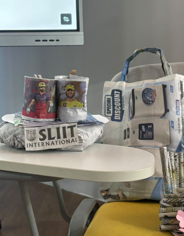
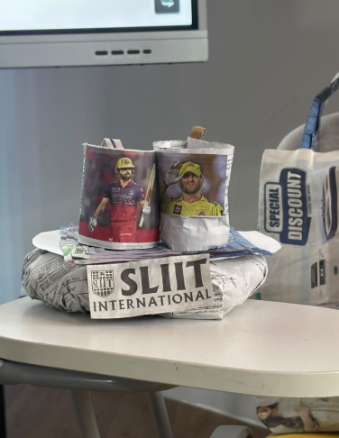

Portfolio Writing and the Paper Craft Challenge
This week focused on understanding the importance of portfolios and how they can be used to present our skills, achievements and experiences. We learned about the different types of portfolios and their purposes. During the session, we also participated in a group activity called the Paper Craft Challenge, where we worked together to create something creative and useful using old newspapers within a limited time.
Types of portfolios
Personal portfolio
A collection about you, covering your interests, achievements and growth over time. It is often used for self-reflection and to share who you are.
Career portfolio
Tracks your skills, experience, training and goals, and supports career planning and development.
Employment portfolio
Prepared for a specific job application and typically includes a CV, a cover letter, references and samples of your work.
Assessment portfolio
Gathers evidence of learning so a teacher or assessor can judge progress against set outcomes. This site is an example.
Importance of Portfolios and What I Learned
Through this session, I learned that portfolios are useful for different purposes, such as:
- Showcasing Skills: Presenting our abilities, achievements and experiences.
- Tracking Progress: Reflecting on our learning and personal development.
- Career Opportunities: Supporting job applications and interviews.
- Academic Assessment: Providing evidence of completed work and learning.
- Career Planning: Setting future goals and identifying areas for improvement.
- Personal Branding: Building a professional image and showing our strengths.
I also realised that a portfolio is more than just a collection of work. It reflects my growth and helps me present my skills with real evidence. Understanding the different types of portfolios taught me how to choose the most suitable one for a specific purpose.
The Paper Craft Activity
During the Paper Craft Activity, our team of 10 members was given a limited time to create something creative using only old newspapers, scissors and celotape. After sharing our ideas, we decided to make two items: a cup and saucer and a gift bag. I contributed by folding newspapers and cutting celotape to help with both creations. Although we did not have specific roles, everyone worked together and supported each other to complete the task on time. In the end, we successfully created both items using newspapers.



What I Learned
This activity helped me understand how creativity and teamwork can lead to successful results, even when time and resources are limited. We had to think creatively, share our ideas and work together to complete the challenge. I realised that teamwork is not just about dividing tasks but also about supporting one another and contributing towards a common goal. This experience taught me the importance of cooperation, time management and problem-solving when working in a team.